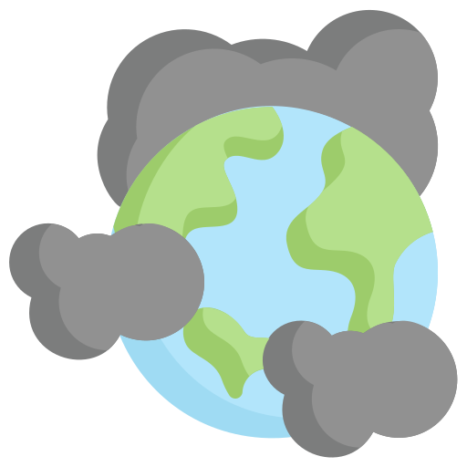

Contaminación
Contaminacion y su impacto
04/11/2021
Contaminación en el aire: La contaminación es muy comun en el aire ya que muchas de las empresas mas famosas del mundo usan aun las fabricas las cuales contaminan demasiado, ya que el humo que sacan contiene las particulas contaminantes, y esas particulas son las que hacen que a veces el aire se vea en un tono gris. Esas empresas lo unico que hacen es contaminar, y luego van y dan la cara diciendo que son zero waste o eco friendly pero esas mismas empresas son las mas dañinas, un ejemplo muy famoso de lo que podria pasar en el mundo si seguimos asi, es india, India siendo el pais mas contaminado y contaminante alcanza los niveles de PM 2.5 y PM 10, unos niveles bastantes altos, y a pesar de que india tiene un indice de turismo muy alto debido a su belleza, atracciones y monumentos, India nos demostro lo que nos va a pasar si seguimos asi
Ejemplos: Gazprom,Coal India, Glencore xstrata